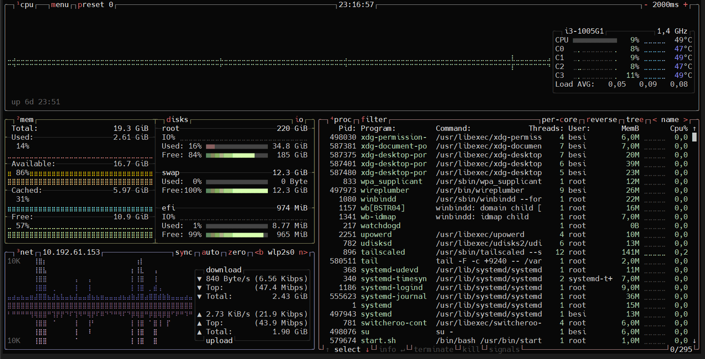
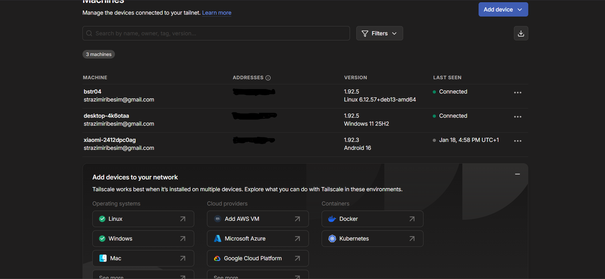
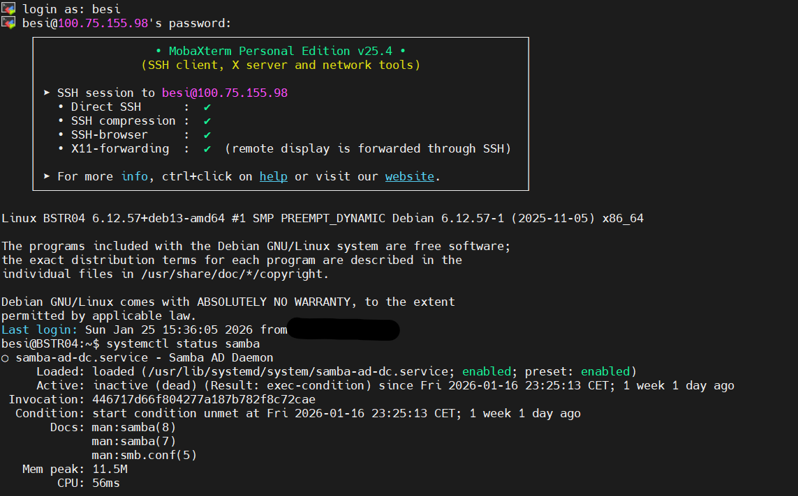
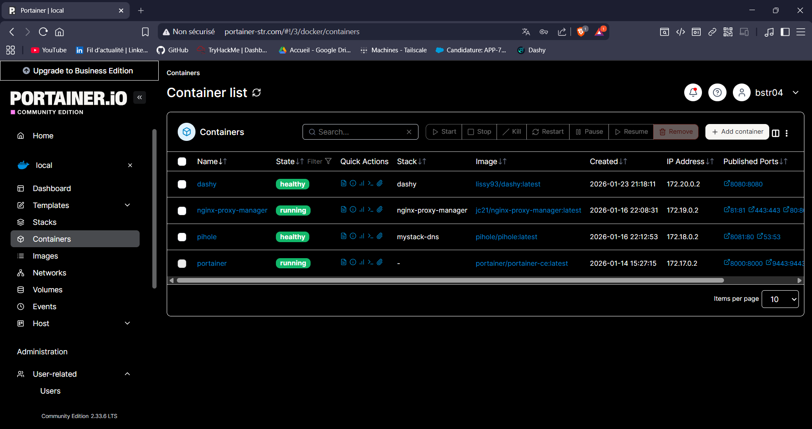
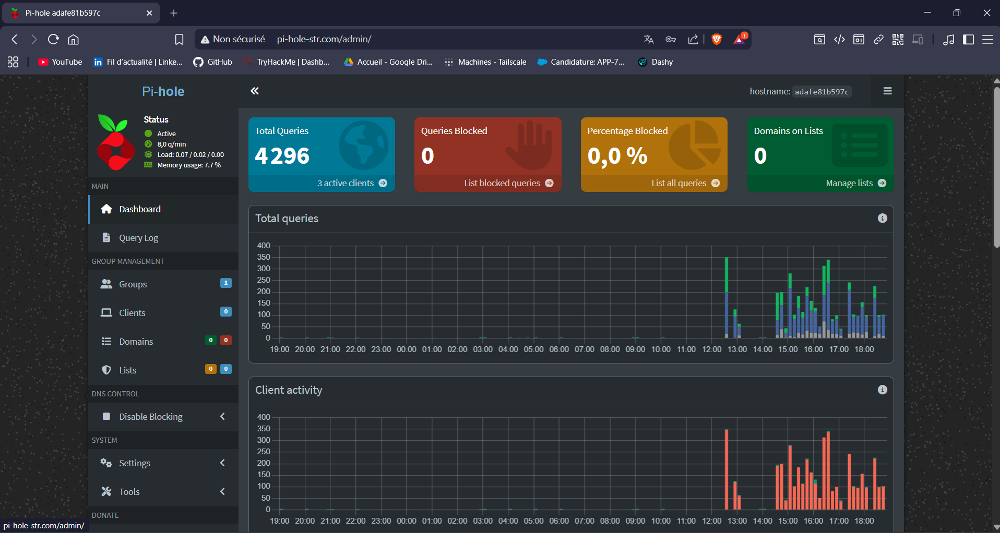

02. L'Architecture Système
- OS : Debian Linux (Stabilité et performance).
- Gestion : Administration 100% "Headless" via SSH (MobaXtrem).
- Stockage : Serveur de fichiers Samba (NAS maison) pour centraliser les documents sur le réseau local.





Ce projet de Home Lab a été une étape clé dans mon parcours système et réseau. Il m'a permis de transformer des contraintes domestiques complexes en une infrastructure fonctionnelle et sécurisée. J'ai non seulement appris à maîtriser l'environnement Linux (Debian) et la conteneurisation, mais j'ai surtout compris la logique de sécurisation et d'exposition de services dans un environnement réseau restrictif.
En résumé, ce Home Lab est bien plus qu'un simple serveur domestique ; c'est un terrain d'apprentissage continu qui m'a préparé à relever des défis techniques réels dans le domaine de l'informatique.